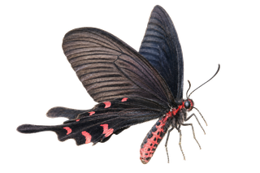

シロオビアゲハ
Papilio polytes
白い「帯」／メスには別の型も
白帯型のオス・メスと、赤斑を持つベニモン型のメスがいます。掲載イラストは後者の参考像です。白帯がある個体をすべてオスとするのも誤りです。［1・2］
- 雌雄の違い
- 雄は白帯型。雌には雄に似た型と、ベニモンアゲハに似る赤斑型がある。
- 幼虫の食草
- シークヮーサー、サルカケミカンなどミカン科。
- 見られる環境
- 庭、市街地、海岸近くや林縁。
地域資料：記録・写真を確認
黒い翅に白い模様、赤い紋。よく似たアゲハも、見る場所を決めると違いが見えてきます。沖縄の記録を手掛かりに、7種を比較します。
資料確認：2026年11月14日 · 成虫の識別入門
帯状ならシロオビ、大きなまとまりならモンキが候補。クロアゲハのオスの白帯は後翅の前縁にあります。
ベニモンアゲハとジャコウアゲハは腹部の赤色が手掛かり。赤い翅の紋と、赤い胴体は別の特徴です。
尾状突起は後翅から伸びる尾のような部分。ナガサキは通常無尾。尾が折れた別種にも注意します。
スマートフォンでは表を横にスクロールできます。通常の傾向を示した比較で、確定用の検索表ではありません。
| 種類 | 尾状突起 | 白い模様・翅の特徴 | もうひとつの注意点 |
|---|---|---|---|
| シロオビアゲハ | 通常はあり | 白帯型は後翅を横切る帯。ベニモン型のメスは白斑と赤斑を持つ。 | 胴体は黒い。赤斑だけでベニモンアゲハと決めない。 |
| クロアゲハ | あり | 大きな中央白斑はない。オスの後翅前縁に白い帯があり、前翅で隠れることも。 | 赤斑の強さは性別・地域で変わる。 |
| ナガサキアゲハ | 通常なし | オスは黒っぽい。メスは後翅の白色部が発達し、前翅基部に赤色が見られる。 | 白いメスと黒いオスは、別種のように見える。 |
| ジャコウアゲハ | 長い尾あり | 細長い翅。後翅に赤い紋があり、腹部の赤色が目立つ。 | ベニモンのような後翅中央の大きな白斑はない。 |
| モンキアゲハ | あり | 後翅の中央付近にまとまった大きな淡色斑。帯状のシロオビと比較する。 | 「黄」の名でも、白っぽく見える。 |
| ベニモンアゲハ | あり | 後翅中央の白斑と、外縁に沿う赤い斑紋。頭部から腹部にも赤色が目立つ。 | 似たシロオビのメスは、胴体が黒い。 |
| オナシシロオビアゲハ | 典型的にはなし | 白帯のある型などがあり、シロオビアゲハに近い外見。 | 尾の欠損個体と混同しない。珍しい記録は専門家に確認。 |
掲載画像は提供されたAI生成イラストです。形態・斑紋の厳密な同定図ではなく、縮尺も統一していません。沖縄以外の個体・亜種に基づく参考像を含みます。文字は画像に埋め込まず、各言語の本文で説明しています。
白帯型のオス・メスと、赤斑を持つベニモン型のメスがいます。掲載イラストは後者の参考像です。白帯がある個体をすべてオスとするのも誤りです。［1・2］
地域資料：記録・写真を確認

シロオビアゲハの帯は後翅の中央付近を横切ります。クロアゲハのオスの白帯は前縁寄りなので、位置を比べます。沖縄産はオスでも赤斑が目立つ場合があり、赤い紋だけでメスと断定できません。［3・提供DB］
地域資料：記録・写真を確認

沖縄での通常型は無尾ですが、まれな有尾型の記録もあります。「尾があればナガサキではない」と決めないでください。本記事は提供DBに合わせ Papilio agenor を採用し、旧来の Papilio memnon という表記も併記します。［4・5］
地域資料：記録・写真を確認

ベニモンアゲハと同様、翅の赤斑だけでなく胴体も見ます。メスは翅が淡く見えることがありますが、地域・亜種差があります。掲載像は沖縄産の形態を保証する標本図ではありません。［3・提供DB］
地域資料：記録・写真を確認

白斑は雌雄ともに見られます。シロオビアゲハの細く連なる帯と、モンキアゲハのまとまった大きな斑を比べると理解しやすくなります。斜めからの写真では形が変わって見えるので、翅全体も確認します。［3・6］
地域資料：記録・写真を確認

シロオビアゲハのベニモン型のメスに似ますが、胴体の赤色が重要な手掛かりです。腹部が写っていない写真では判断を保留することも必要です。ジャコウアゲハとは中央の白斑の有無も比べます。［1・2・7］
地域資料：記録・写真を確認
提供DBでは Papilio alphenor として区別しますが、P. polytes の亜種とした文献もあります。地域資料には1990年9月14日の与那国島の日本初記録や、竹富島・西表島・波照間島の記録が掲載されています。記録があることは、現在いつでも見られることを意味しません。［8・提供DB］
地域資料：記録・写真を確認
シロオビアゲハのベニモン型のメスは、捕食者にとって食べにくいベニモンアゲハに似ています。無防備な側が、捕食者に避けられる種の姿に似るベイツ型擬態の例です。個体が意図して模様を変えるわけではなく、遺伝する形質と自然選択に関わる現象です。［1・2］
シロオビ・クロ・ナガサキ・モンキ・オナシシロオビの幼虫はミカン科を利用します。一方、ジャコウ・ベニモンの幼虫はウマノスズクサ類を利用します。ベニモンでは食草由来の防御成分が知られ、姿の似たシロオビとは食草も異なります。成虫が同じ花に来ても、幼虫が同じ葉を食べるとは限りません。［1・7・8・提供DB］
ノートに「白斑の形・胴体の色・尾・場所・日付」の5欄を作れば、簡単な比較記録帳になります。庭のミカン類では幼虫も観察できますが、食草だけで種を決めず、成長に伴う模様の変化も記録しましょう。
基礎情報は提供資料 Z002 butterflies.csv / butterflies.sqlite3（2026-11-10）を参照。島別の記録は現時点の定着や出現頻度を保証しません。ナガサキアゲハの学名、ジャコウアゲハの属名（Byasa / Atrophaneura）、オナシシロオビアゲハの分類は資料により扱いが異なります。
提供されたAI生成イラストを縮小版のまま再利用。元の参考写真に基づく派生図として、各写真の作者と継承ライセンスを表示します。
オナシシロオビアゲハは、写真・派生イラストを転載せず、地域資料の写真へリンクしています。


_male_underside_Luang_Prabang_2.jpg){kind=link}